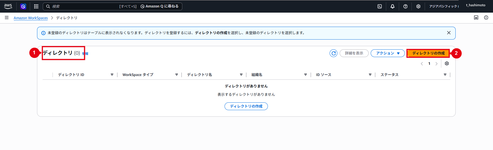
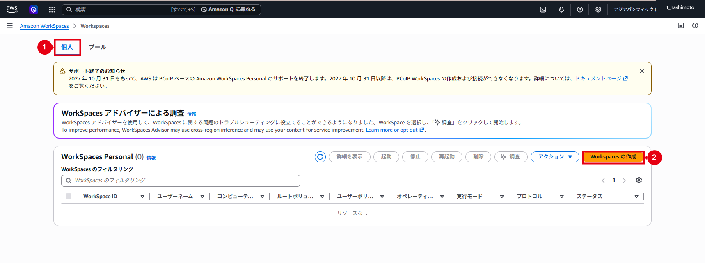
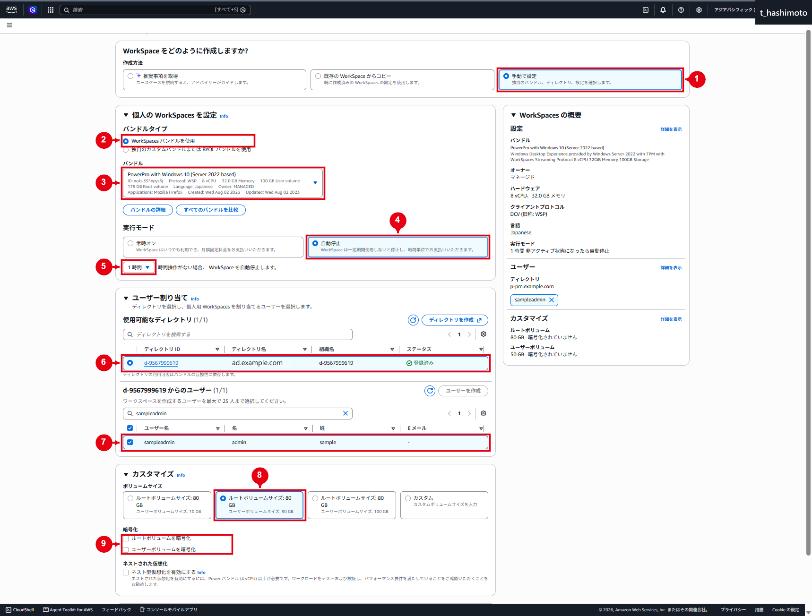
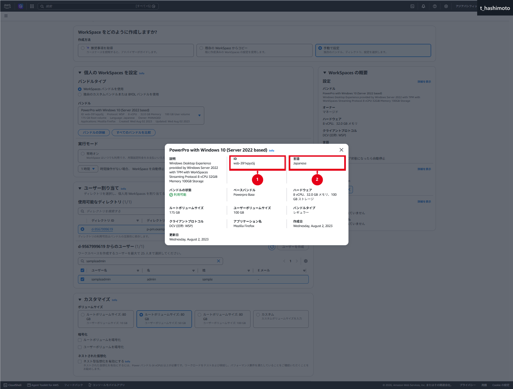
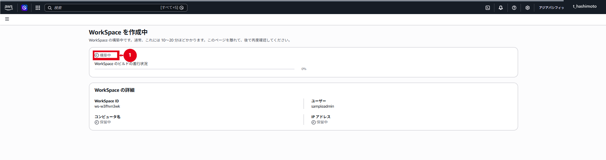
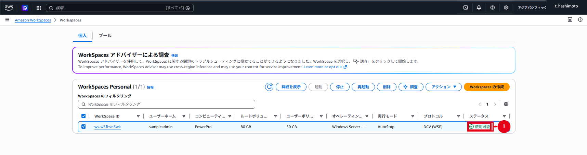
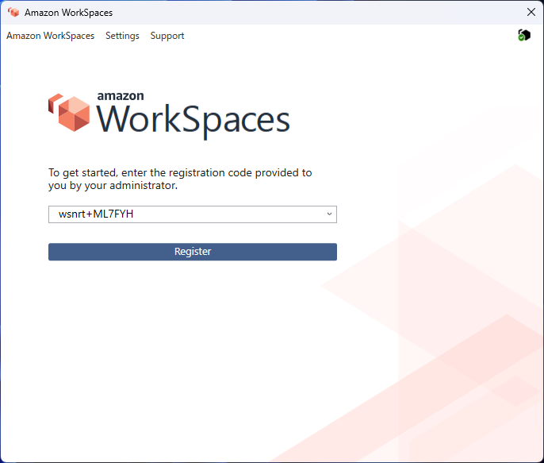
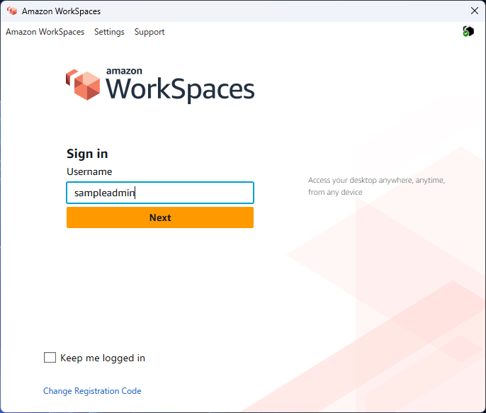

WorkSpaces Personalの構築・接続
仕様
構成・動作
| 項目 | 内容 |
|---|---|
| AWS管理領域 | ドメインコントローラーとAWS管理のOU・GPOはAWSが管理します。 |
| お客様管理領域 | ad配下のComputersとUsersを使用します。 |
| WorkSpaces用OU | ad\Computers\WorkSpacesを作成し、コンピューターアカウントを配置します。 |
| サービスアカウント | ad\UsersのADConnectorServiceをConnectorsへ追加し、同グループへWorkSpaces OUの権限を委任します。 |
| ターゲットOU | WorkSpacesの登録済みディレクトリで、同じWorkSpaces OUを指定します。 |
| GPO | お客様作成のAmazon WorkSpaces DCV PolicyをWorkSpaces OUへ直接リンクします。 |
ドメイン直下のComputersコンテナーと、ad\Computers OUは別の管理領域です。ユーザーはad\Usersに配置し、WorkSpaces専用OUにはコンピューターアカウントを配置します。

本図は構築後の構成を示す説明図です。専用OU・委任・GPOは⑦と⑧で設定します。AWSが作成する領域の詳細はAWS Managed Microsoft ADで作成される内容を参照してください。
管理範囲
- パブリックバンドル：AWSが提供するOS、コンピューティング、ストレージおよびプロトコルの組み合わせ
- カスタムイメージ：参照WorkSpaceのOS、アプリケーションおよび設定を取り込んだイメージ
- カスタムバンドル：カスタムイメージへコンピューティングタイプとストレージ設定を組み合わせた起動テンプレート
今回の画面では、PowerPro with Windows 10 (Server 2022 based)を選択しています。表示名に「Windows 10」が含まれますが、括弧内のServer 2022 basedを含む正式名称で記録します。
制約事項
ℹ️ 情報：ターゲットOUの反映対象
変更後に新規作成または再構築するWorkSpaceへ反映されます。既存のコンピューターアカウントは自動移動されません。詳細はWorkSpaces PersonalのOU選択を参照してください。
作業の実施順序
- 本書の構築作業でAD ConnectorをWorkSpacesへ登録します。
- ④または⑦で準備した専用OUと権限委任を確認し、⑦でターゲットOU設定を完了します。未作成の場合は、ドメイン参加済みの管理用EC2からOUを作成します。
- 本書へ戻り、WorkSpaceを作成して接続とOU所属を確認します。
- ⑧でGPOを設定し、代表WorkSpaceで適用を確認します。
- カスタムバンドルを使用する場合は⑨で参照WorkSpaceからイメージ・バンドルを作成し、そのバンドルを指定して追加のWorkSpaceを作成します。
構築作業
1. AD Connectorを登録する
AWS Directory ServiceでAD Connectorを作成しただけではWorkSpacesで使用できません。対象AD ConnectorをWorkSpaces Personalへ登録し、WorkSpacesを起動する2サブネットを指定します。
登録前の確認
- Amazon WorkSpacesコンソールを開き、「ディレクトリ」を選択します。
- WorkSpacesタイプが「個人」となっていることを確認します。
- 対象AD Connectorが登録済み一覧にないことを確認します。
- 「ディレクトリの作成」を選択します。

ディレクトリを登録する
- WorkSpacesタイプで「個人」を選択します。
- WorkSpaceデバイス管理で「AWS Directory Service」を選択します。
- Directory ID、タイプ、ドメイン、VPCおよび状態を照合して対象AD Connectorを選択します。
- 対象VPCのWorkSpaces用サブネットを異なるアベイラビリティーゾーンから2つ選択します。
- セルフサービスアクセス許可を承認済み設計に合わせます。有効にすると、利用者が再構築、コンピューティングタイプ、ボリュームおよび実行モードなどを変更でき、料金へ影響する場合があります。
- 「登録」を選択し、
REGISTERINGから登録済みへ変わるまで待ちます。 - 登録後のDirectory ID、AD Connector、VPC、ドメインおよび2サブネットを確認します。
AWSが作成した<Directory ID>_workspacesMembers形式のセキュリティグループを確認し、既存ルールを削除または置換する場合は影響範囲を確認します。
登録操作の詳細は既存ディレクトリの登録を参照してください。
2. ターゲットOUを確認する
OUが未作成の場合は⑦を実施してから、次の確認を行います。
- WorkSpacesコンソールの「ディレクトリ」で対象AD Connectorを選択します。
- 「ターゲットドメインと組織単位」を開きます。
- Amazon WorkSpaces用OU作成・権限委任・ターゲットOU設定手順で設定したDNと一致することを確認します。
Connectorsへの委任先OUとも一致することを確認します。
WorkSpaces専用OUやお客様作成GPOは、WorkSpace作成時に自動作成されません。GPOはGPMCで対象OUへリンクします。
3. WorkSpaceを作成する
詳細なコンソール操作はWorkSpaces PersonalのWorkSpaceを作成するも参照してください。
作成を開始する
- WorkSpacesコンソールで「WorkSpaces」を選択します。
- 「WorkSpacesを起動」から「個人」を選択します。
- 「WorkSpacesの作成」を選択します。

バンドル、ディレクトリおよびユーザーを指定する
- 「手動で設定」を選択します。
- 「WorkSpacesバンドルを使用」を選択します。
- 正式名称、Bundle ID、OS、プロトコルおよびコンピューティングタイプを確認して、承認済みバンドルを選択します。
- 実行モードを選択し、AutoStopの場合は停止までの時間を指定します。
- Directory ID、ドメインおよびVPCを照合して登録済みAD Connectorを選択します。
- 申請されたドメインユーザーを選択します。
- ルート80GB、ユーザー50GBを指定します。
- ルート／ユーザーボリュームの暗号化とKMSキーを承認済み設計に合わせます。
- 必須タグ、ローカル管理者権限、追加SG、インターネット接続およびデバイスアクセス制御を確認します。

選択したバンドルの詳細で、バンドルID、言語、OS、プロトコルおよびハードウェアを確認します。

図5のパブリックバンドル詳細にはルート175GB／ユーザー100GBが表示されます。今回のWorkSpace作成ではカスタマイズ欄で80GB／50GBを選択します。バンドル詳細の既定表示と、作成時に確定したストレージを混同しません。
⚠️ 注意：ストレージと暗号化は作成前に確定する
WorkSpace作成後、ボリュームは拡張できますが縮小できません。暗号化なしで作成したWorkSpaceへ後から暗号化を追加すること、暗号化済みWorkSpaceから暗号化を解除することもできません。誤った場合は利用者影響とデータ退避を確認して再作成します。
作成を実行する
- バンドル、Directory ID、ユーザー、実行モード、ストレージ、暗号化、KMSキーおよびタグを最終確認します。
- 「WorkSpacesの作成」を選択します。
- 一覧で状態が「構築中」または
PENDINGになったことを確認します。

- 状態が「使用可能」または
AVAILABLEになるまで待ちます。 - WorkSpace ID、ユーザー、コンピューター名、バンドル、80GB／50GB、実行モード、DCV、IPアドレスおよび暗号化状態を確認します。

4. OU所属とクライアント接続を確認する
Active Directory
- ADUCで
ad\Computers\WorkSpacesを開き、新しいコンピューターオブジェクトを確認します。 - コンピューター名がWorkSpacesコンソールの値と一致することを確認します。
- ⑧を実施済みの場合は、
gpresult /scope computer /rでAmazon WorkSpaces DCV Policyの適用を確認します。初回構築で⑧が未実施の場合は、接続確認後に⑧へ進みます。
クライアント接続
- WorkSpacesクライアントをインストールします。
- 対象ディレクトリの登録コードを入力します。
- Active Directoryのユーザー名とパスワードでサインインします。
- デスクトップ、業務ネットワーク、DNS、時刻同期および必要アプリケーションを確認します。
- AutoStopを使用する場合は、切断、停止および再接続を確認します。


取得時の登録コードは画面例です。実作業では接続先ディレクトリの登録コードを使用します。パスワードは画面キャプチャや作業記録へ残しません。
接続完了画面は⑦の管理端末確認の図1を参照してください。
運用作業
1. よくある問い合わせと切り分け
次の5件は、AD ConnectorでWorkSpacesを使用する際に問い合わせが多い内容です。詳細な条件と最新情報はWorkSpaces Personalに関する問題のトラブルシューティングを参照してください。
招待メールまたはパスワードリセットメールが届かない
AD Connector、信頼されたドメイン、またはActive Directoryに既に存在するユーザーを使用する場合、ウェルカムメールやパスワードリセットメールは自動送信されません。管理者が登録コード、クライアントの入手先および接続方法を安全な経路で案内し、パスワードリセットはActive Directory管理者が実施します。
「パスワードを忘れた場合」が表示されない
AD Connectorまたは信頼されたドメインのユーザーは、WorkSpacesクライアントからパスワードをセルフリセットできません。Active Directory側で本人確認とパスワードリセットを行い、「次回ログオン時にパスワード変更が必要」を有効にした場合のWorkSpaces接続可否も運用手順に従って確認します。
DNS unavailable
AD Connectorから指定DNSサーバーのTCP 53とUDP 53へ通信できない場合に発生します。AD Connectorの両サブネットから両DNS IPへのルート、セキュリティグループ、ネットワークACLおよびDNSサーバー側ファイアウォールを確認します。
Connectivity issues detected
LDAP unavailable (TCP port 389)またはKerberos/authentication unavailable (TCP port 88)が表示された場合は、AD ConnectorからドメインコントローラーへのTCP／UDP 88（Kerberos）とTCP／UDP 389（LDAP）を確認します。片方のドメインコントローラーだけでなく、両方へ到達できることを確認します。
SRV record
AD Connectorは、指定DNSサーバーから_ldap._tcp.<DNSドメイン名>と_kerberos._tcp.<DNSドメイン名>のSRVレコードを取得する必要があります。次のコマンドで両レコードを確認し、対象ドメインコントローラーが返ることを確認します。
Resolve-DnsName -Type SRV '_ldap._tcp.ad.example.com'
Resolve-DnsName -Type SRV '_kerberos._tcp.ad.example.com'最後の3件はAD Connectorの作成・接続診断でも発生します。WorkSpace作成を繰り返す前に、AD Connector側のネットワークとDNSを解消します。
2. 作成に失敗した場合
- AD ConnectorとWorkSpacesへのディレクトリ登録が正常か確認します。
- 両サブネットから両DNSサーバー／ドメインコントローラーへ到達できることを確認します。
- サブネットの空きIP、2つのAZ、往復ルート、SGおよびネットワークACLを確認します。
ADConnectorServiceの有効化、ロック、パスワード期限およびAD Connectorに保存した認証情報を確認します。ConnectorsのOU委任とWorkSpacesのターゲットOUが一致することを確認します。- 対象ユーザー、重複WorkSpace、Service QuotasおよびKMSキー権限を確認します。
- WorkSpacesのエラーメッセージ、CloudTrailおよびAWS Health Dashboardを確認します。
接続したディレクトリでWorkSpaceの起動が繰り返し失敗する場合は、AD Connector指定時の両DNSサーバー／ドメインコントローラーへ各ディレクトリサブネットから到達できることを確認します。必要に応じて各サブネットへ検証用EC2を起動し、両DNS IPを使ったドメイン参加で切り分けます。
3. 誤作成時の対応
- 対象WorkSpaceのID、ユーザー、Directory IDおよび誤設定内容を照合します。
- 利用者へ登録コードを案内せず、必要なデータがないことを確認します。
- 対象WorkSpaceだけを終了します。
- Active Directory側のコンピューターオブジェクトを確認します。
- 正しい値でWorkSpaceを再作成します。
ディレクトリ登録を解除する場合は、そのディレクトリを使用するWorkSpacesと関連サービスをすべて確認します。稼働中のWorkSpacesがある状態で、ディレクトリ登録、AD Connector、サービスアカウント、OU委任または必須SGルールを先に削除しません。